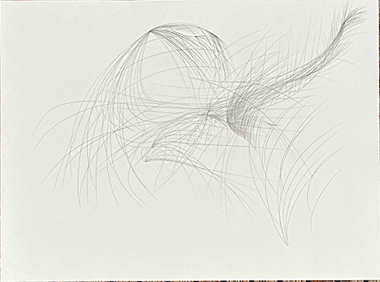

My imagination marries embodied intelligence with conceptual abstractions. Keeping this humming along is no easy task in a business world where sensation is so ruthlessly extracted from the praxis of working. But I refuse to be deterred, because I have experienced my subconscious processing communicate with my conscious mind via my movement patterns, and, as a thinker, I refuse to leave my MVP on the bench when buildng my life’s work. I dedicate to advancing my homebrew style of mind and meaning making with the ferocity of a nun who knows what she stands to lose if the fullness of her being is denied.
This blog is me proclaiming myself and documenting my journey. After four years of working in tech I found I was still holding my breath. I began dulling my body, not sure how to leverage my perspective. That I am at this point where I believe I can articulate the connections between my studio practice and the teams and systems I’m serving (and aspire to serve) is a product of the love and care of my community, both in and outside of my role at Landed. My colleagues, partners, and friends have never shamed me for my feral use of metaphors or my periodic checking in with my body to source networks of knowledge. I am grateful for their belief in me, and to be coming into my own as a systems thinker in a community that values cognitive diversity. And by golly, when I look objectively at this mind-body that builds conceptual scaffolding through embodied poetics and grafts them to a study of emergence in human-computer engineering systems, even I think, “whoa, that’s pretty unusual but soooooo cool”.
I have over 25 years of experience building studio practices that shift and evolve based on my curiosities. In my late 20s I began to adopt the position that a studio practice is central to my development of my imagination. It demands I formalize the ingredients that are shaping my thinking. It sharpens my perspective so I know where I’m coming from when engaging with colleagues in the world.
I’m interested in nuturting engineering communities of practice that embrace what artists have long known to be true - imagination is a portal to the powerhouse of the subconcsious. There are rich human cultural traditions that challenge and exite the mind-body, leading to innovation. Why are we keeping them so far from engineers? Why are offices set up as mini mind factories, prioritizing the gear over human bodies? Why are designers the only one’s allowed to have creative practice in the engineering ecosystem, when engineers are creatively solving problems every day? I will continue to dedicate my management practice to addressing these questions, and weaving in more and more humanity and creativity into our conception of what it means to build technical systems.
The focal point of my studio practice is a four-dimensional (4D) ocean. The 3D reduction would look much like our earth’s oceans - a dynamic display of material in motion through space. A dynamical system. A process. A state of becoming. The additional dimension is time. As an embodied thinker, I can not hold advaned intuitions of 4D spaces accurately in my body alone, so I partner with computers. Professionally, I steward human-computer ecosystems that study 4D oceans in service of unblocking pain points adversely affecting specific populations.
Through my studio practice and professional work, I am learning to see events as instantaneous snapshots. The consequential outcome of a set of other events. The starting point for finite set of probable futures. I am learning to diffuse my attention to map the broader manifold of inputs and outputs surrounding such events. Bayesian inference has totally shaped my thinking on this as has meditation on the ocean dynamics (Naviar-Stokes).
This is how I think, and rather than try to un-think this way, I gravitate towards service opportunities that might benefit from my practice of mind. This is what led me to stewarding human-computer systems. Such systems are themeselves 4D oceans, and as such are prime areans for applying my practice.
My studio practice advances on two lines of inquiry — embodiment and concept.
My embodiment practice is anchored in a movement meditation practice centered around a study of 3D fluid dynamics (Gaga, bodysurfing, sketching, Somatic Natural History Archive, situated cognition practice with Slow Research Lab). I’m particulary interested in how the impact of events develop and decay in systems over time. This is as important to me for its application to studying how technical debt impacts the ability to generate value in human-computer ecosystems, as it is in understanding how we can accelerate society’s rippling out of the damage casued by structural racism.
My conceptual development is anchored on study of inference, algebraic topology, learning algorithms, core CS, and emergence in complex systems.
My goal is to become a wave whisperer for complex emergent systems, blending my growing analytic/critical toolkit alongside the embodied intuition I’m cultivating. This is lifelong pursuit, so I’m pacing myself, while committing to apply my learnings in realtime to the growth of enterprises solving problems that matter.
That our minds are situated at particular 3D vantage points on the waves of a 4D ocean motivates my enthusiasm for computing. My subconscious does this 4D ocean mapping already (human minds are awesome!), but my mind’s preocuppation with my organism prevents me from seeing events rising across subsets of the population, which is what I’m intereted in addressing to alleviave suffering in others. If it was just about me tracking me, I probably wouldn’t be interested in computing. But I can’t sense the population, so I collaborate with computing systems.
From my perspective, this is the core purpose of software engineering. Scan society. Find the fundamental wounds. Build human-computer systems to gather data, intercept work/experience flows, propose new actions based on batch and streaming data analysis, and iterate until the “water” runs clean. Machine learning is a critical part of the vision I hold, but for most ventures I’d say that is not the bottleneck. Scalable infrastructure, strong data engineering, and empowered developer culture are typically the forces I’m tracking. I also hold information as the first class citizen in my imagination, with all other aspects of the system serving it.
- Gathering data
- Storing data
- Moving data
- Enriching data
- Serving data
- Protecting data
This is what guides my on-going research of engineering systems, but the technical system is only part of the story. Engineering is a human enterprise. If we care about finding engigneering solutions, we must care deeply about the human cultures that foster their emergence. For me, this is rooted both in practice of nuturing communities of practice as well as supporting the development of rich indiviudal studio practices, where every engineer is encouraged to develop their own unique art of engineering. I will speak of both the technical and the human in this blog, but MBAs be warned, I don’t speak the reductionist language of capitalism. I speak the language of inifinite conceputal horizons backed by a fervant belief in the power of the human imgination. I will not artificially stop the lines of my thinking to connect ideas back to the market. But, I will say, I play incredibly well with product and leadership teams that do! I just want to be clear about where I am situated. It would be silly for me to pretend my life’s passion is anything other than applying my study of 4D oceans to the cultivation of powerful human-computer ecosystems in service of healing critical wounds in the populace.
I’m chosing to blog about this because bringing my full mind-body to the table is why I got into tech. I had a deep feeling that my idiosyncratic mind could be of service. As you know, it takes a lot of effort to get in the room. One can not learn computer science from intuition. It is a collective endeavor born from the hearts and minds of millions of humans and their thinking machines, and I have spent years apprenticing (and will continue to apprentice for the rest of my life). Likewise, one can not rely on a computer to reveal what it feels like to follow a wave to where it collides with others, creates foam, mist, and terminates its kinetic information in air, and how a life of such tracings can inform an incredibly rich intuition of cause and effect.